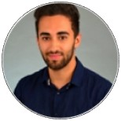

Team

Dr Navid Banafshe
Founder, CEO, CSO
Navid is a neuroscientist with 10 years’ experience in the auditory neuroscience. He founded Neso Technology after completing his PhD at King’s College London where he was awarded the Marie Curie PhD Fellowship. Navid has authored five publications featured in scientific journals, globally.